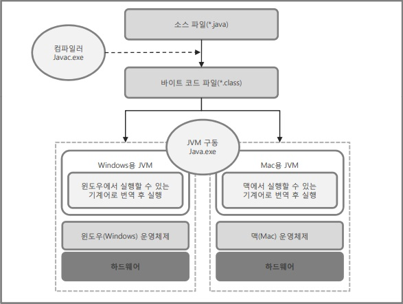

자바란?(java)
* 객체 지향 프로그래밍 언어이다.- 프로그램의 부품에 해당하는 객체들을 만들고, 이것들을 하나씩 조립 및 연결해서 전체 프로그램 을 완성하는 기법을 객체 지향 프로그래밍(OOP: Object Oriented Programmin)이라고 한다.
* 이식성이 높은 언어이다.
- 이식성이란 서로 다른 실행 환경을 가진 시스템 간에 프로그램을 옮겨 실행할 수 있는 것이다.
- 자바 언어로 개발된 프로그램은 소스 파일을 다시 수정하지 않아도, 자바 실행 환경(JRE: Java Runtime Environment)이 설치되어 있는 모든 운영체제에서 실행 가능, 즉, 플랫폼 독립적이다.
* 메모리를 자동으로 관리한다.
- 객체 생성 시 자동적으로 메모리를 할당하고, 사용이 완료되면 쓰레기 수집기(Garbage Collector) 를 실행시켜 자동적으로 객체를 제거시켜준다
* 배우기 쉽다.
자바 가상 머신(JVM: Java Virtual Machine)
- 운영체제는 자바 프로그램을 바로 실행할 수 없다. 그 이유는 자바 프로그램은 완전한 기계어가 아닌, 중간 단계의 바이트 코드이기 때문에 이것을 해석하고 실행할 수 있는 가상의 운 영체제가 필요하다. 이것이 자바 가상 머신이다.- JVM은 실 운영체제를 대신해서 자바 프로그램을 실행하는 가상의 운영체제 역할을 한다.
- 자바 프로그램을 운영체제가 이해하는 기계어로 번역해서 실행해야 하므로 JVM은 운영체 제에 맞게 설치되어야 한다.

자바 개발 환경 구축
자바 플랫폼의 종류- 자바 플랫폼이란 자바 프로그램이 실행되기 위해 제공되는 프로그램.
- 자바 프로그램들이 공통적으로 사용하는 JVM을 비롯해서 자바 프로그램 개발에 필수적인 도구와 라이브러리 API를 정의한다.
Java SE(Java Standard Edition)
- 자바 표준 개발환경, 자바의 핵심적이며 표준이 되는 플랫폼.
- 일반적인 컴퓨터 환경의 응용 프로그램을 개발하기 위해 제공되는 환경.
Java EE(Java Enterprise Edition)
- 기업 솔루션 개발환경.
- 기업적 자원을 이용한 상호작용에 대한 분산 기술, 인터넷 응용프로그램까지 Servlet/JSP, XML 기술 등이 추가되어 표준으로 규정하는 환경.
Java ME(Java Micro Edition)
- 모바일 솔루션 개발환경.
- 휴대폰이나 PDA, 프린터 등의 장치에서 필요로 하는 응용프로그램들의 실행을 위해 제공되는 환경
자바 개발 도구(JDK) 설치
- Java SE의 구현체는 자바 개발 도구(JDK: Java Development Kit)와 자바 실행 환경(JRE: Java Run time Environment) 두 가지 버전이 있다.
- JRE : 자바 실행 환경, JVM + 클래스 라이브러리(Java API) - JDK : 자바 개발 도구, JRE + 개발에 필요한 실행 파일(javac.exe 등)
컴파일 및 실행
컴파일- 컴파일이란 작성된 프로그램을 기계어로 변환하는 것.
- 자바에서는 컴파일 후 중간 언어인 바이트 코드를 생성.
- C:\>javac Sample.java
바이트코드(Byte Code)
- *.java 파일을 컴파일 할 때 만들어지는 *.class 파일
- 완전한 기계어가 아닌 중간 단계의 언어이며, 기계어로 변환하기 좋은 단계의 반 기계어.
- 가상머신에 의해 실행된다.
인터프리터(Interpreter)
- 바이트코드(*.class)를 기계어로 변환하여 실행하는 것.